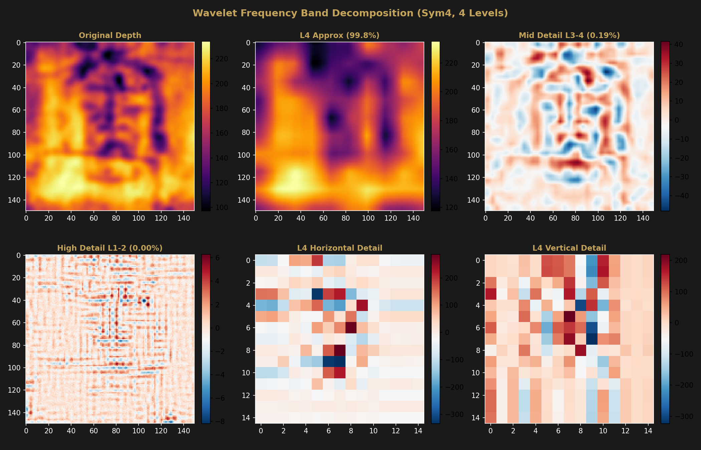
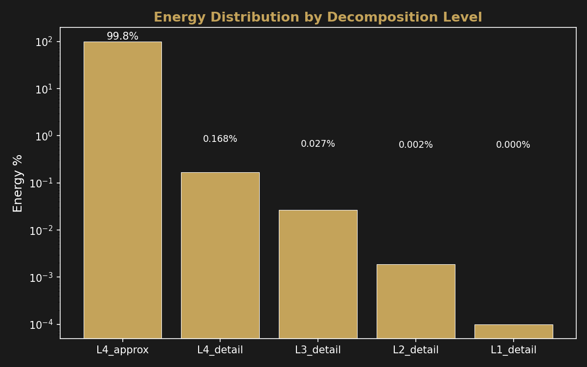
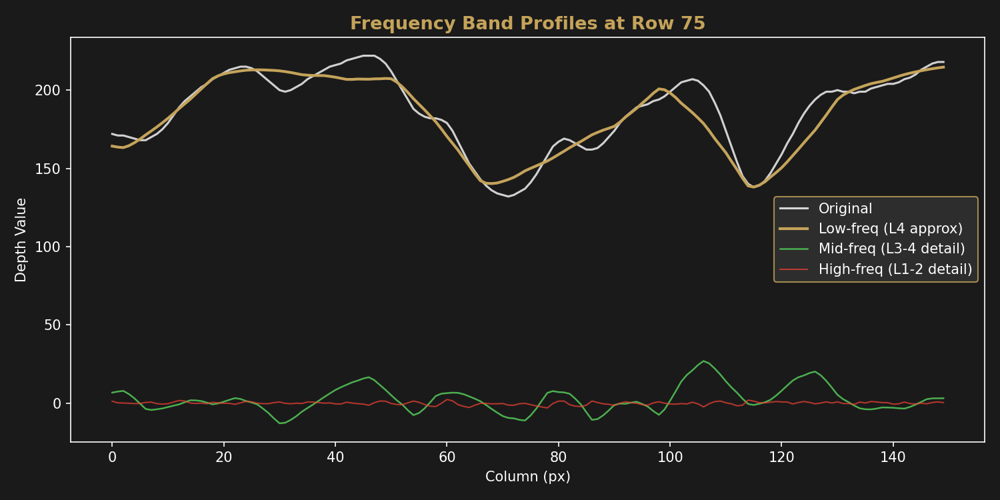

Signal Analysis
Multi-Frequency Depth Decomposition
Wavelet decomposition separates the depth map into frequency bands, revealing how much of the signal is face geometry versus cloth texture.
Method
The 150×150 Enrie depth map was decomposed using a Symlet-4 (sym4) wavelet at 4 levels via PyWavelets. At each level, the signal splits into a low-frequency approximation and three directional detail coefficient sets (horizontal, vertical, diagonal). Energy is computed as the sum of squared coefficients at each level, normalized to the total coefficient energy.
Energy Distribution
| Level | Component | Energy (%) |
|---|---|---|
| Level 4 | Approximation (gross face shape) | 99.8034% |
| Level 4 | Detail coefficients | 0.1679% |
| Level 3 | Detail coefficients | 0.0267% |
| Level 2 | Detail coefficients | 0.0019% |
| Level 1 | Detail coefficients (highest frequency) | 0.0001% |
Signal-to-Noise Ratio
Defining signal as the Level 3–4 approximation and detail coefficients, and noise as the Level 1 detail coefficients, the SNR is 59.75 dB. This indicates an extremely clean facial signal well-separated from high-frequency content.
Frequency Band Visualization



Interpretation
The face signal dominates the depth map at low spatial frequencies. The Level 4 approximation alone captures 99.80% of the total coefficient energy — this corresponds to the gross geometry of the face (nose ridge, brow, cheeks, chin).
Mid-frequency detail (Levels 3–4, combined 0.19%) encodes finer anatomical features such as the eye sockets and nasal bridge contours. High-frequency content (Levels 1–2, combined 0.002%) represents cloth weave texture and surface noise.
The extremely high SNR (59.75 dB) confirms that the depth information encoded in the Shroud image is overwhelmingly body-derived, not cloth-derived. The cloth weave contributes less than 0.01% of the depth signal energy.